引首
正文
词曰：
shū lín gǎn huái 《书林感怀》 míng shī nài ān ——明·施耐庵 shì kàn shū lín yǐn chù ， jǐ duō jùn yì rú liú 。 试看书林1隐处，几多2俊逸3儒流4。 xū míng bó lì bù guān chóu ， cái bīng jí jiǎn xuě ， tán xiào kàn wú gōu 。 虚名薄利5不关愁6，裁冰7及剪雪8，谈笑看吴钩9。 píng yì qián wáng bìng hòu dì ， fēn zhēn wěi zhàn jù zhōng zhōu ， qī xióng rǎo rǎo luàn chūn qiū 。 评议前王并后帝，分真伪占据中州10，七雄扰扰乱春秋。 xīng wáng rú cuì liǔ ， shēn shì lèi xū zhōu 。 兴亡如脆柳11，身世12类虚舟13。 jiàn chéng míng wú shù ， tú xíng wú shù ， gèng yǒu nà táo míng wú shù 。 见成名无数，图形14无数，更有那逃名15无数。 shà shí xīn yuè xià cháng chuān ， jiāng hú biàn sāng tián gǔ lù 。 霎时新月16下长川17，江湖变桑田18古路。 yà qiú yú yuán mù ， nǐ qióng yuán zé mù ， kǒng shāng gōng yuǎn zhī qū mù 。 讶19求鱼缘木，拟20穷猿择木21，恐伤弓远之曲木22。 bù rú qiě fù zhǎng zhōng bēi ， zài tīng qǔ xīn shēng qǔ dù 。 不如且覆23掌中杯，再听取新声曲度24。
@ details 示意图 @
 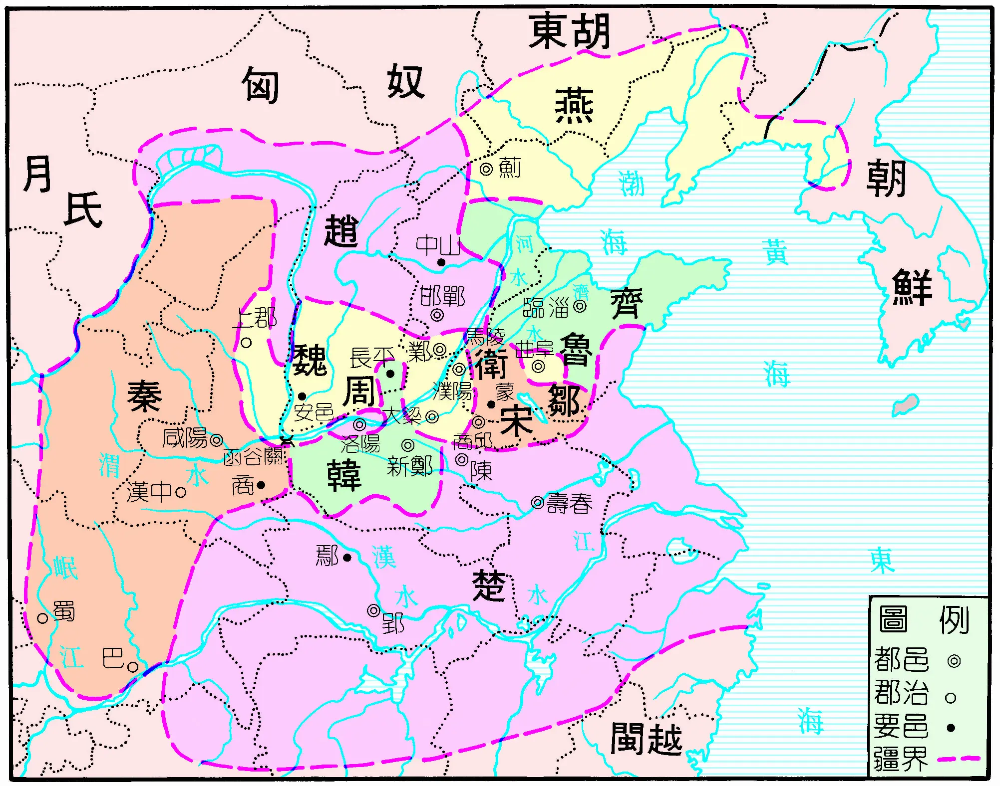
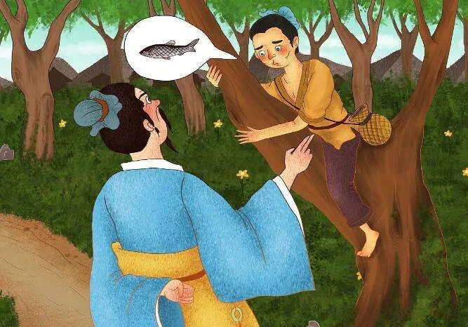
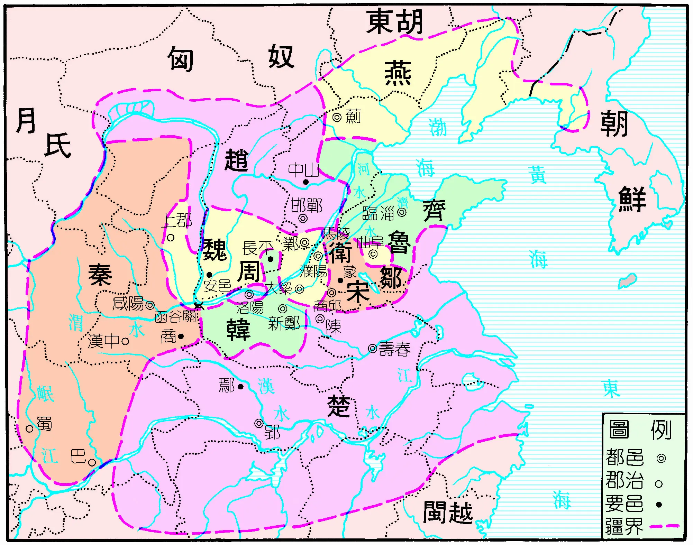
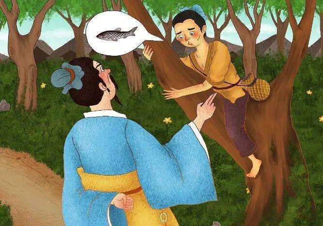
@ enddetails 示意图 @
@ details 《书林感怀》解析 @
译文
试着看看那书籍众多的僻静之处，有多少英俊洒脱的读书人。虚假的名声和微薄的利益都与他们的忧愁无关，他们有着高洁的品行，在谈笑之间看着象征壮志豪情的兵器。他们评议前朝的帝王，分辨真伪，讨论占据中原之事，就如同战国七雄扰乱春秋时期一般。国家的兴亡就如同脆弱的柳树，人生的经历如同空荡的小船。看到有无数人成名，有无数人的画像留存，更有无数人逃避声名。转眼间新月已照在长河之上，江湖变化，古老的道路变成了农田。惊讶于就像在树上求鱼一样不切实际，打算像走投无路的猿猴选择树木栖息，又担心像被弓箭射伤的鸟远离弯曲的树木那样小心翼翼。不如暂且倒满手中的酒杯，再次聆听新的乐曲曲调。
赏析
这首词以一种深沉而感慨的笔调，展现了文人对人生、历史和名利的思考。
开篇 “试看书林隐处，几多俊逸儒流”，描绘出一个充满文人雅士的书林僻静之地，奠定了整首词的文化氛围。“虚名薄利不关愁，裁冰及剪雪，谈笑看吴钩”，表现出这些文人对名利的淡泊，以及他们高洁的品质和壮志豪情。他们不被世俗的虚名薄利所困扰，有着如 “裁冰剪雪” 般的高尚情操，同时又能以一种洒脱的态度看待象征着武力和权力的 “吴钩”。
“评议前王并后帝，分真伪占据中州，七雄扰扰乱春秋”，文人在这里评议历史，展现出他们对历史的深刻洞察和思考。他们如同战国七雄一般，对历史上的帝王、真伪、中原的争夺等问题进行探讨，体现了他们的博学和睿智。
“兴亡如脆柳，身世类虚舟”，将国家的兴亡比喻为脆弱的柳树，人生的身世比喻为空荡的小船，深刻地表达了对历史变迁和人生无常的感慨。国家的兴衰转瞬即逝，人生也充满了不确定性。
“见成名无数，图形无数，更有那逃名无数”，描绘了不同人对名利的不同态度，有追求成名的，有被画像纪念的，也有逃避声名的，反映了社会的多样性和人性的复杂。
“霎时新月下长川，江湖变桑田古路”，通过新月照长河和江湖变桑田的景象，进一步强调了时间的流转和世事的变化。时间飞逝，世事无常，一切都在不断地变化。
“讶求鱼缘木，拟穷猿择木，恐伤弓远之曲木”，用一系列比喻表达了人们在困境中的迷茫和谨慎。就像在树上求鱼一样不切实际，走投无路的猿猴选择树木栖息，又担心像被弓箭射伤的鸟远离弯曲的树木那样小心翼翼，形象地表现了人们在面对选择和困境时的复杂心态。
最后 “不如且覆掌中杯，再听取新声曲度”，表达了一种豁达和超脱的态度。既然人生充满了无常和困惑，不如倒满酒杯，享受当下，聆听新的乐曲，体现了作者对人生的一种乐观和从容的态度。
整首词语言优美，意境深远，通过对书林文人的描写，展现了对历史、人生、名利的深刻思考，具有很高的艺术价值。
@ enddetails 《书林感怀》解析 @
诗曰：
wǔ dài luàn hòu tài píng jǐng 《五代乱后太平景》 sòng shào yōng ——宋·邵雍 fēn fēn wǔ dài luàn lí jiàn ， yí dàn yún kāi fù jiàn tiān 。 纷纷五代25乱离间26，一旦云开复见天。 cǎo mù bǎi nián xīn yǔ lù ， chē shū wàn lǐ jiù jiāng shān 。 草木百年新雨露，车书万里旧江山27。 xún cháng xiàng mò chén luó qǐ ， jǐ chù lóu tái zòu guǎn xián 。 寻常巷陌28陈罗绮29，几处楼台奏管弦。 rén lè tài píng wú shì rì ， yīng huā wú xiàn rì gāo mián 。 人乐太平无事日，莺花30无限日高眠31。
@ details 示意图 @
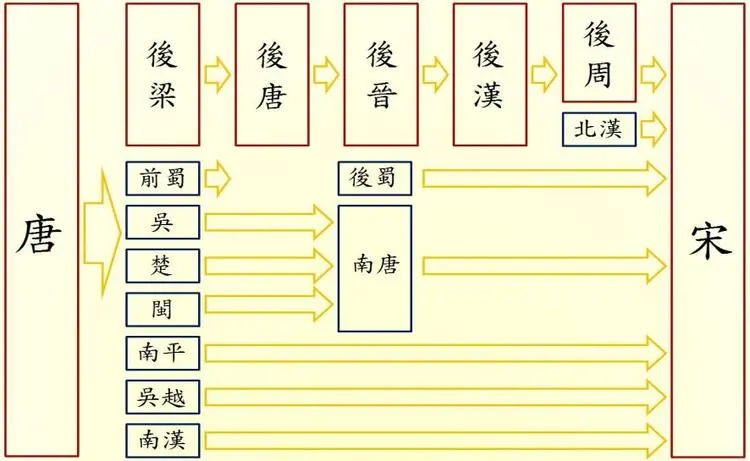 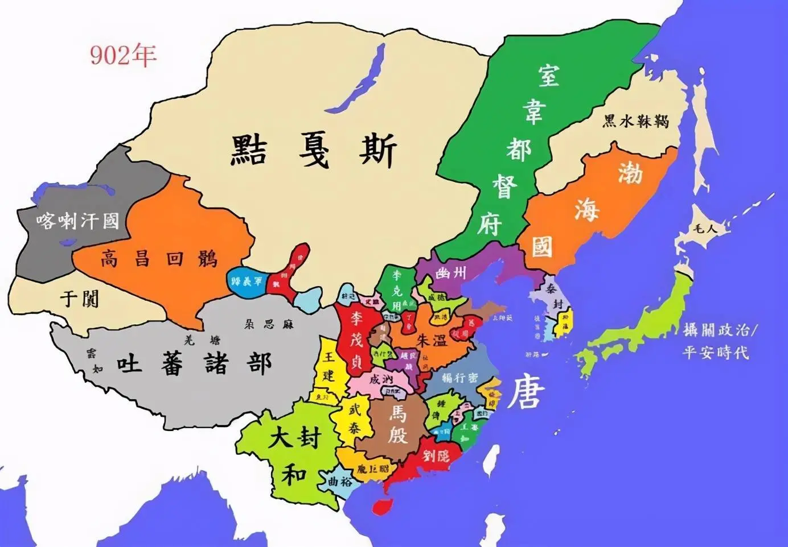 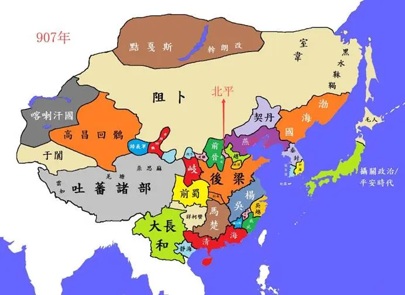 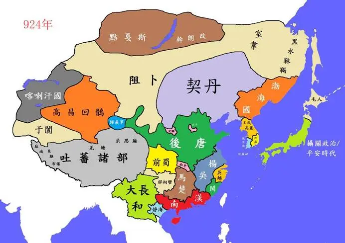 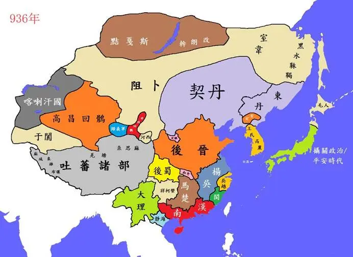 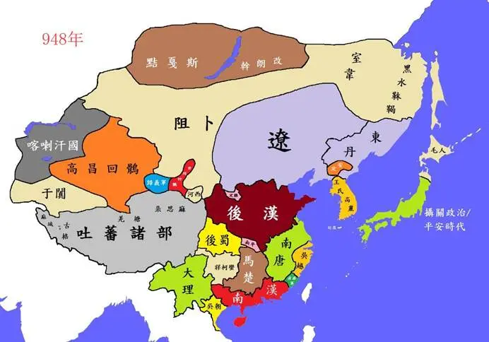 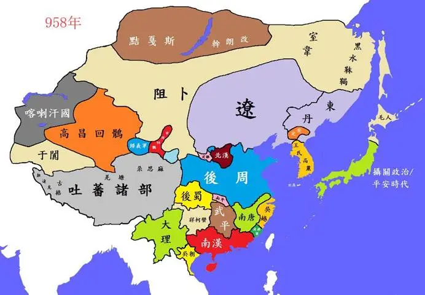 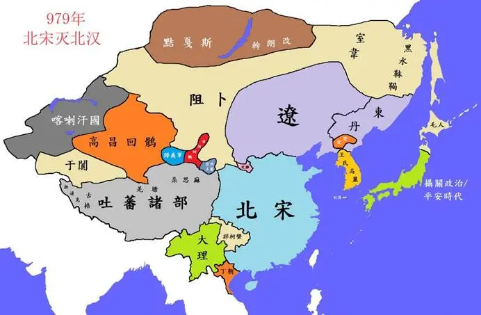
@ enddetails 示意图 @
@ details 《五代乱后太平景》解析 @
译文
纷纷扰扰的五代时期在战乱中混乱不堪，忽然有一天云雾散开又见到了朗朗青天。历经百年，草木迎来了新的雨露滋润，车同轨书同文，万里江山恢复了往日的模样。平常的街巷里陈列着绫罗绸缎，有几处楼台上传来演奏管弦乐器的声音。人们在太平无事的日子里快乐无比，在这莺啼花开的时节里可以整日高枕无忧地酣睡。
赏析
这首诗描绘了五代战乱结束后，天下太平的景象。
首句 “纷纷五代乱离间” 简洁地概括了五代时期的混乱局面，战乱频繁，社会动荡不安。而 “一旦云开复见天” 则以形象的比喻，表现出战乱结束后，天空放晴，局势转好的情景，给人带来希望和喜悦。
“草木百年新雨露，车书万里旧江山”，通过对自然景象和国家统一的描写，进一步展现了太平时期的繁荣。草木经过百年的战乱后迎来新的雨露，象征着生命的复苏和希望。“车书万里旧江山” 则强调了国家的统一，车同轨书同文，万里江山恢复了往日的秩序。
“寻常巷陌陈罗绮，几处楼台奏管弦”，从民间和上层社会两个方面描写了太平时期的富足和欢乐。街巷里陈列着绫罗绸缎，显示出百姓生活的富裕；楼台上传来的管弦乐声，则表现出贵族们的享乐生活。
最后一句 “人乐太平无事日，莺花无限日高眠”，直接表达了人们在太平日子里的快乐和安逸。莺啼花开，景色宜人，人们可以无忧无虑地高枕而眠，享受着和平带来的幸福。
整首诗语言平实，意境优美，通过对五代战乱后太平景象的描写，表达了对和平、繁荣的向往和赞美。
@ enddetails 《五代乱后太平景》解析 @
话说这八句诗，乃是故宋32神宗33天子朝中一个名儒，姓邵，讳34尧夫，道号康节先生所作。为叹五代残唐天下干戈不息，那时朝属梁，暮属晋，正谓是：”朱李石刘郭，梁唐晋汉周，都来十五帝，播乱五十秋。35“后来感的天道循环，向甲马营36中生下太祖武德皇帝来。这朝圣人出世，红光满天，异香经宿不散，乃是上界霹雳大仙37下降。英雄勇猛，智量宽洪，自古帝王都不及这朝天子。一条杆棒等身齐，打四百座军州38都姓赵。那天子扫清寰宇，荡静中原，国号大宋，建都汴梁39。九朝八帝班头40，四百年开基帝主41。因此上邵尧夫42先生赞道：”一旦云开复见天。”正如教百姓再见天日之面。不则43这个先生吟赞，那时西岳华山有个陈抟处士44，是个道高有德之人，能辨风云气色。一日骑驴下山，向那华阴道45中正行之间，听得路上客人传说：”如今东京46柴世宗47让位与赵检点48登基。”那陈抟先生听得，心中欢喜，以手加额，在驴背上大笑，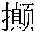下驴来。人问其故，那先生道：”天下从此定矣。”正应上合天心，下合地理，中合人和。自庚申49年间受禅，开基即位，在位一十七年，天下太平，自此定矣。传位与御弟太宗即位。太宗皇帝在位二十二年，传位与真宗皇帝。真宗又传位与仁宗。
@ details 示意图 @
北宋皇帝图
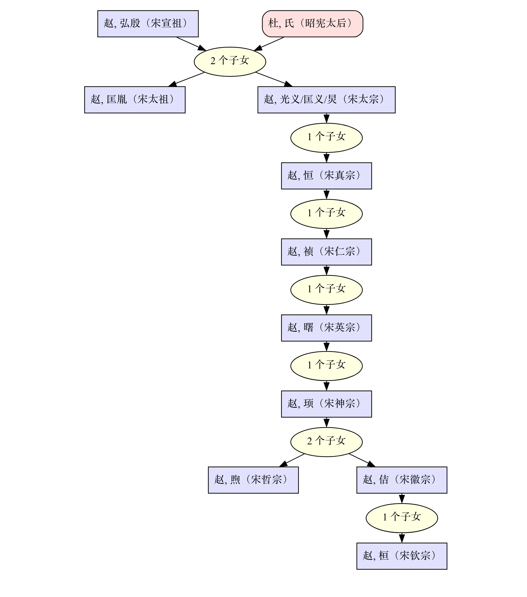@ enddetails 示意图 @
这仁宗皇帝，乃是上界赤脚大仙50。降生之时，昼夜啼哭不止。朝廷出给黄榜51，召人医治。感动天庭，差遣太白金星52下界，化作一老叟，前来揭了黄榜，能治太子啼哭。看榜官员引至殿下，朝见真宗天子。圣旨教进内苑53，看视太子。那老叟直至宫中，抱着太子，耳边低低说了八个字，太子便不啼哭。那老叟不言姓名，只见化一阵清风而去。耳边道八个甚字？道是：”文有文曲，武有武曲。”端的54是玉帝差遣紫微宫55中两座星辰56，下来辅佐这朝天子。文曲星57乃是南衙58开封府59主龙图阁大学士60包拯61，武曲星62乃是征西夏国大元帅狄青63。这两个贤臣，出来辅佐。
这朝皇帝，庙号64仁宗天子，在位四十二年，改了九个年号。自天圣元年癸亥65登基，至天圣九年，那时天下太平，五谷丰登，万民乐业，路不拾遗，户不夜闭，这九年谓之一登。自明道元年至皇祐三年，这九年亦是丰富，谓之二登。自皇祐四年至嘉祐二年，这九年田禾66大熟，谓之三登。一连三九二十七年，号为三登之世67。那时百姓受了些快乐。谁想道乐极悲生：嘉祐三年上春间，天下瘟疫盛行，自江南直至两京，无一处人民不染此症。天下各州各府，雪片也似申奏将来68。
且说东京城里城外，军民无其太半69。开封府主包待制70亲将惠民和济局方71，自出俸资合药72，救治万民，那里医治得住，瘟疫越盛。文武百官商议，都向待漏院73中聚会，伺候早朝，奏闻天子，专要祈祷，禳谢74瘟疫。
不因此事，如何教三十六员天罡75下临凡世，七十二座地煞76降在人间，哄动77宋国乾坤，闹遍赵家社稷。有诗为证：
诗曰：
lùn shì zhī biàn 《论世之变》 míng shī nài ān ——明·施耐庵 wàn xìng xī xī huà yù zhōng ， sān dēng zhī shì lè wú qióng 。 万姓熙熙78化育79中，三登之世乐无穷。 qǐ zhī lǐ yuè shēng yōng zhì ， biàn zuò bīng gē jiàn jǐ cóng 。 岂知礼乐笙镛治80，变作兵戈剑戟丛。 shuǐ hǔ zhài zhōng tún jié xiá ， liáng shān pō nèi jù yīng xióng 。 水浒寨中屯节侠81，梁山泊内聚英雄。 xì tuī zhì luàn xīng wáng shù ， jǐn shǔ yīn yáng zào huà gōng 。 细推治乱兴亡数，尽属阴阳造化功。
@ details 《论世之变》解析 @
译文
万民在和乐的教化中生活，天下太平、五谷丰登的时候快乐无穷。哪里知道在礼乐升平的治理下，却变成了充满兵戈剑戟的战乱之世。水浒寨中聚集着节义豪侠之士，梁山泊内汇聚着英雄人物。仔细推究社会治乱兴亡的规律，这一切都属于阴阳造化的作用。
赏析
这首诗以宏观的视角探讨了社会的治乱兴衰变化。
开篇 “万姓熙熙化育中，三登之世乐无穷” 描绘了百姓在和乐的环境中生活，太平盛世给人们带来无尽的欢乐，体现出对和平繁荣时期的向往。
接着 “岂知礼乐笙镛治，变作兵戈剑戟丛”，笔锋一转，从和平盛世突然转向战乱，形成强烈反差，表达了对世事无常的感慨和对社会变故的意外。
“水浒寨中屯节侠，梁山泊内聚英雄”，引出水浒中的人物，他们在乱世中成为节义豪侠和英雄，暗示了在动荡的时代，总有一些人会挺身而出。
最后 “细推治乱兴亡数，尽属阴阳造化功”，作者对社会的治乱兴亡进行思考，认为这一切似乎都由阴阳造化所决定，带有一种宿命论的色彩，同时也流露出对历史发展规律的无奈和思索。
整首诗语言简洁，意境深远，通过对社会不同状态的描写和思考，展现了作者对历史和人生的深刻感悟。
@ enddetails 《论世之变》解析 @
解释下面的脚注：
解释下面的脚注：
解释下面的脚注：
解释下面的脚注：
-
书林：书籍众多之处，也可引申为文人雅士聚集的文化之地。 ↩
-
几多：多少，表示数量不确定。 ↩
-
俊逸：英俊洒脱，超群拔俗。 ↩
-
儒流：儒者之辈，指读书人。 ↩
-
虚名薄利：空有的名声和微薄的利益。 ↩
-
不关愁：与忧愁无关。 ↩
-
裁冰：比喻有高洁的品行。 ↩
-
剪雪：也有高洁之意，与裁冰类似。 ↩
-
吴钩：春秋时期流行的一种弯刀，这里泛指兵器，象征着壮志豪情。 ↩
-
中州：古地区名，即中土、中原。 ↩
-
脆柳：脆弱的柳树，比喻兴亡的短暂和脆弱。 ↩
-
身世：人生的经历和命运。 ↩
-
虚舟：空船，比喻人生的空虚和无常。 ↩
-
图形：画像，这里可能指成名之人被画像纪念。 ↩
-
逃名：逃避声名。 ↩
-
新月：农历每月初出的弯月。 ↩
-
长川：长河。 ↩
-
桑田：农田，比喻世事变化巨大。 ↩
-
讶：惊讶。 ↩
-
拟：打算，想要。 ↩
-
穷猿择木：比喻人在困境中急于寻找依靠。 ↩
-
伤弓远之曲木：被弓箭射伤的鸟会远离弯曲的树木，比喻受过伤害的人会更加小心谨慎。 ↩
-
覆：倒，这里指倒酒。 ↩
-
新声曲度：新的乐曲曲调。 ↩
-
五代：唐朝灭亡后依次定都于中原地区的五个政权，即后梁、后唐、后晋、后汉和后周。 ↩
-
乱离间：混乱、分裂。形容五代时期战乱频繁，政权更迭，社会动荡不安。 ↩
-
车书万里旧江山：车同轨，书同文，指国家统一。万里江山恢复到以前统一的状态。 ↩
-
巷陌：街巷。 ↩
-
罗绮：丝绸织物，这里代指华丽的服饰或商品。 ↩
-
莺花：黄莺和鲜花，泛指美好的春光景色。 ↩
-
日高眠：整天高枕而眠。形容人们在太平日子里安逸舒适的生活状态。 ↩
-
故宋：过去的宋朝。 ↩
-
神宗：宋神宗赵顼，北宋第六位皇帝。 ↩
-
讳：旧时指对尊长避免直呼其名，在名字前加“讳”字表示尊敬。 ↩
-
“朱李石刘郭，梁唐晋汉周，都来十五帝，播乱五十秋。”：概括了五代时期后梁、后唐、后晋、后汉、后周五个朝代，朱、李、石、刘、郭五个姓氏的十五位皇帝，在五十多年间战乱不断。 ↩
-
向甲马营：地名。 ↩
-
霹雳大仙：传说中宋太祖赵匡胤的前世神仙身份。 ↩
-
军州：古代行政区划名。 ↩
-
汴梁：北宋都城，今河南开封。 ↩
-
九朝八帝班头：指北宋在历史上历经九个时期，共八位皇帝，宋太祖是众皇帝之首。 ↩
-
开基帝主：开创基业的皇帝。 ↩
-
上邵尧夫：前文提到的邵尧夫，即邵雍，北宋著名理学家、数学家、诗人。 ↩
-
不则：不只；不止。 ↩
-
陈抟处士：陈抟，五代宋初著名道教学者、隐士。处士，指有才德而隐居不仕的人。 ↩
-
华阴道：地名，在华山附近。 ↩
-
东京——宋建都在汴梁（开封），称东京。又称河南府（现在洛阳地方）做西京，应天府（现在商丘地方）做南京，大名府（现在大名地方）做北京。西京、南京、北京的设置，是对东京而言，为陪都，政治地位高于其他一般的城市。 ↩
-
柴世宗：后周世宗柴荣。 ↩
-
赵检点：赵匡胤曾担任后周殿前都点检。 ↩
-
庚申：干支纪年。 ↩
-
赤脚大仙：传说中宋仁宗的前世神仙身份。 ↩
-
黄榜——皇帝的公告，用黄纸书写，叫做黄榜。 ↩
-
太白金星：神话中的神仙。 ↩
-
内苑：皇宫内的园林。 ↩
-
端的——真的、果然的意思。有时也作究竟解释。 ↩
-
紫微宫：神话中神仙居住的宫殿，这里借指天庭。 ↩
-
星辰：这里指神仙，被认为是星辰下凡。 ↩
-
文曲星：神话中主管文运的星宿，这里指包拯。 ↩
-
南衙：指开封府，因在皇宫南面而称南衙。 ↩
-
开封府：北宋时期的行政机构。 ↩
-
龙图阁大学士：官职名。 ↩
-
包拯：北宋名臣。 ↩
-
武曲星：神话中主管武运的星宿，这里指狄青。 ↩
-
狄青：北宋名将。 ↩
-
庙号：皇帝死后在太庙立室奉祀时特起的名号。 ↩
-
癸亥：干支纪年。 ↩
-
田禾：庄稼。 ↩
-
三登之世：指连续三个丰年的时代。 ↩
-
雪片也似申奏将来：像雪花一样纷纷上奏。形容上奏的文书很多。 ↩
-
无其太半：超过一半。 ↩
-
包待制：包拯的官职称呼，待制为官名。 ↩
-
亲将惠民和济局方：亲自拿着惠民和济局的药方。 ↩
-
俸资合药：用自己的俸禄来配药。 ↩
-
待漏院——宋时官员朝见皇帝的朝房。皇帝五更临朝，官员半夜就要进宫在朝房里等候。古人的计时方法用铜壶滴漏，待漏的意思就指等候时间。 ↩
-
禳谢：祈祷消除灾祸。 ↩
-
天罡：星名，即北斗七星的柄。这里指三十六天罡星，神话中为神将。 ↩
-
地煞：星名，泛指凶神恶鬼。这里指七十二地煞星，神话中为神将。 ↩
-
哄动：使……轰动。 ↩
-
熙熙：和乐的样子。 ↩
-
化育：教化培育。 ↩
-
笙镛治：指在音乐和谐、礼仪完备的治理下。笙和镛都是古代的乐器，这里代指礼乐制度。 ↩
-
屯节侠：聚集有气节的侠义之士。 ↩